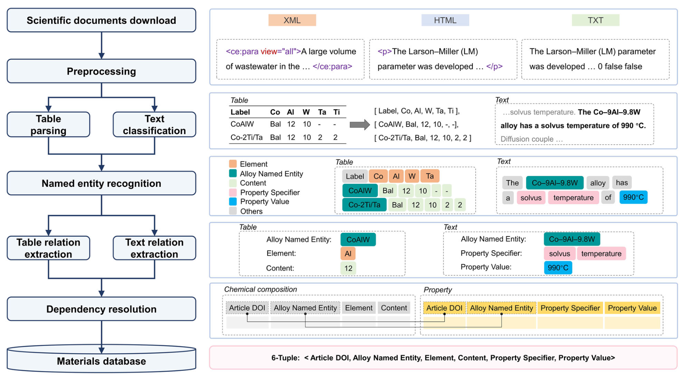
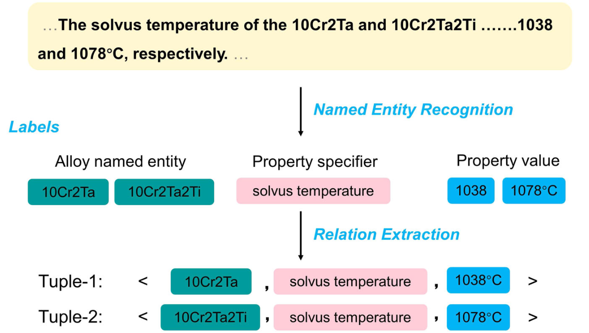
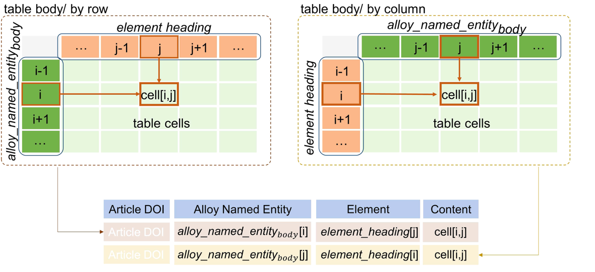

Automated pipeline for superalloy data by text mining
完成时间：2023-04-04
来自：npj（SCI 1区）
题目：《通过文本挖掘实现提取高温合金数据的自动化方法》
代码地址： https://github.com/MGEdata/SuperalloyDigger
期刊 & 年份：npj Computational Materials (2022)
文献中包括大量可靠的数据，这篇论文主要是通过从一万多篇文献中提取两千多条的成分和性能数据，进行对高温合金的预测。
一、Motivation & Contribution
1. 提出了一个自动化的NLP方法，将高温合金的化学成分和性能数据捕获到单个数据集中，然后使用从文献中的14425篇期刊文章中提取数据对高温合金进行分析。
2. 针对小型语料库，开发了一种基于规则的NER方法和一种启发式文本多关系提取距离算法，该方法无需标记样本。
3. 对于表处理需求，开发了一种通用的表解析和关系提取算法。
4. 为了衡量提取数据的预测性，我们建立了一个数据驱动的 ML 模型来预测和比较 15 种高温合金的 γ 溶剂温度。（预测的相对误差在2.27%）
二、Methodology Review

1. 流程
（1）科学文献下载和预处理：从HTML、XML和TXT文本中，对原始的语料进行预处理
（2）表格解析：将表的完整标题和正文转化为结构化的形式，然后分类哪些表包含需要抽取的化学成分和目标属性信息
（3）文本分类：确定哪些句子中包含待抽取的目标属性信息
（4）NER：从文本和表格中识别合金实体、属性指定符和属性值，然后进行关系抽取
（5）表格、文本关系抽取：给出了元素内容和属性的具体元组关系，以及相互依赖关系的解析
（6）依赖关系解析
（7）将提取的包含物品数字对象标识符（DOI）、合金命名实体、化学元素、内容、属性说明符、属性值的元组实体自动编译成高度结构化的格式，形成材料数据库。
2. NER-->生成一个6元组
（1）6元组由文章DOI、合金命名实体、化学元素、内容、属性说明符和属性值组成
（2）合金命名实体通常以元素成分(例如Co - 9Al - 9.8 W和8Al1W2Mo)、高温合金名称(例如, ERBOCo - 0和U720Li)或代名词(例如,该合金)的形式描述。化学元素可以根据元素周期表进行识别，其组成以at . %或wt . %的形式表示。属性描述符是指目标属性名称，如γ′溶剂温度或密度
（3）通过正则表达式，来对高温合金的书写形式进行表示。

3. 文本关系抽取-->4元组
基于距离的算法 --> 无需标记样本来处理多重关系抽取
最短距离算法
顺序匹配算法
4. 表关系抽取

（1）表方向( "按行"或"按列")首先通过估计表体中目标信息的行或列位置来检测，例如化学元素
（2）绿色单元格中的合金命名实体和橙色单元格中的元素分别通过对应序列中每个表单元格的行和列索引进行连接，最后写成四元组
（3）表解析将完整的表信息，包括表标题和正文，转化为嵌套的表单元格列表的结构格式，然后分类哪个表包含待提取的化学成分和目标属性信息
（4）以成分提取为例，在表关系提取时，首先通过估计表体中化学元素的行或列位置来检测表方向( "按行"或"按列")。然后检查表标题，看是否存在合金命名实体
5. 数据相互依赖性关系
（1）相互依赖性解析旨在解决特定材料的化学成分和属性数据片段的关联。文本和表格关系抽取后，化学成分元组从表格中获取，属性元组从文本和表格中获取
（2）采用分治策略
三、Discussion
合金命名实体的F1 score达到92.07%
使用启发式多关系抽取算法来克服语料标签有限的情况